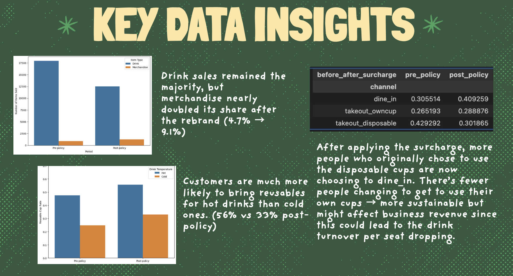
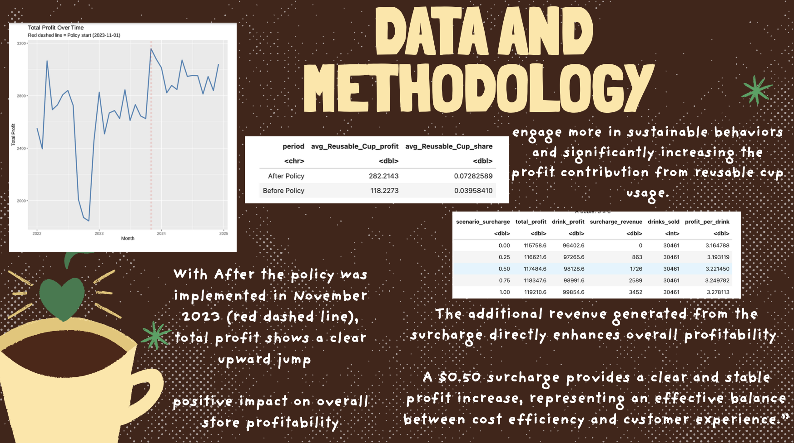
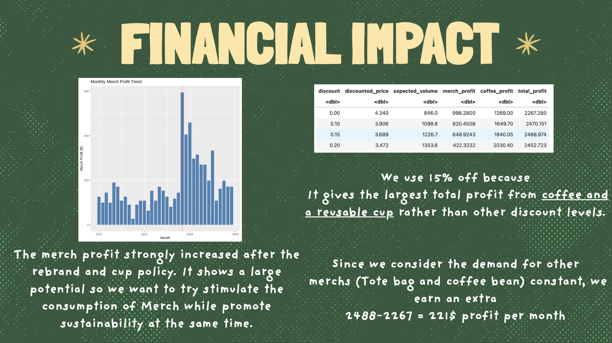
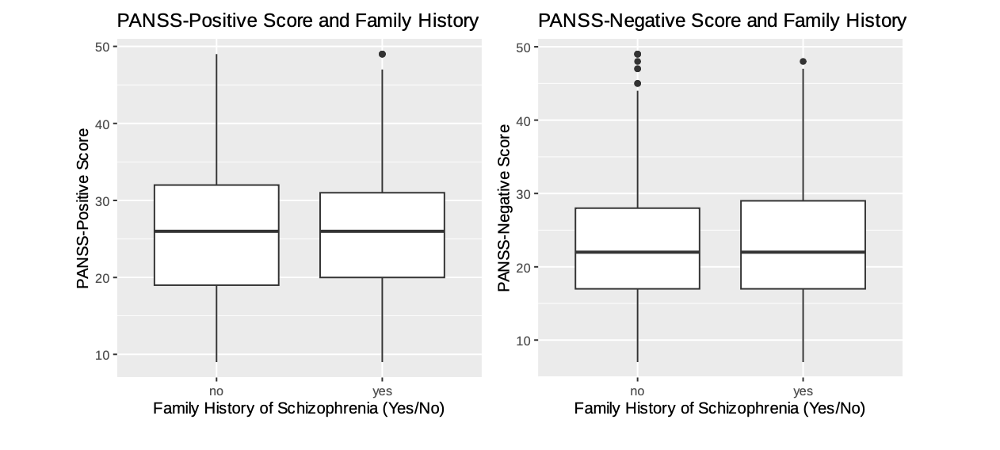
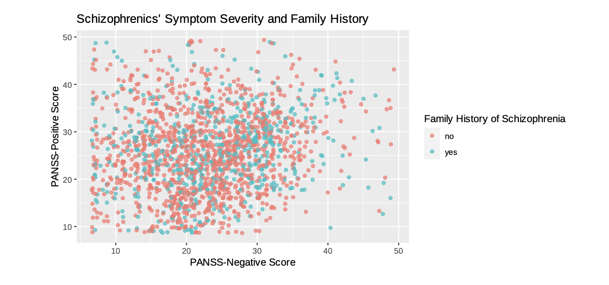
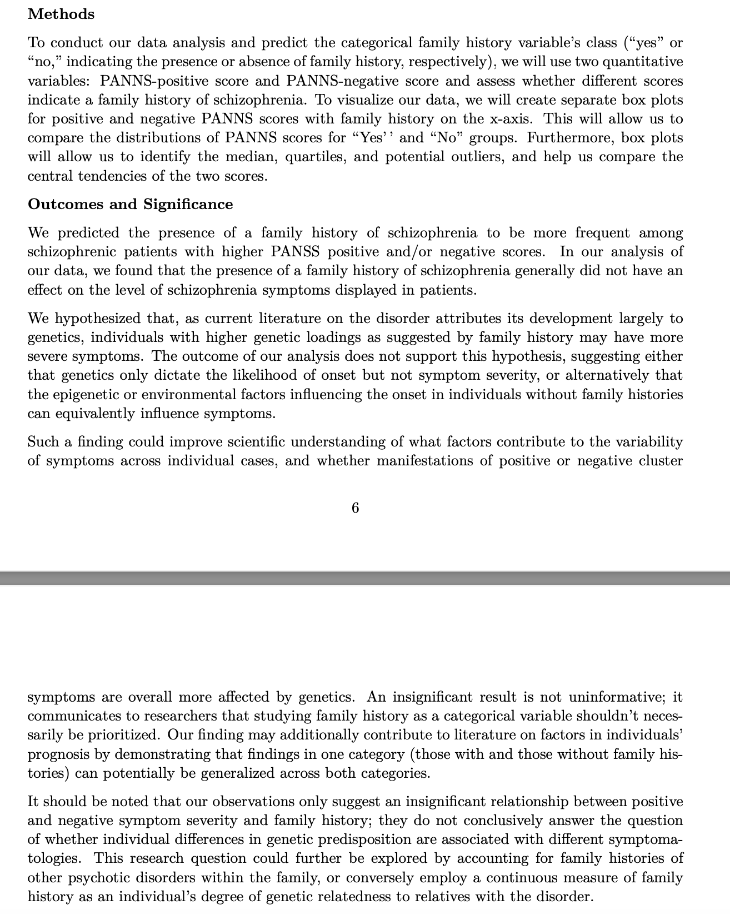

📍 Vancouver, BC | Specialization: Actuarial Science
Relevant Coursework
Engineered visit-level datasets using SQL to analyze behavioral trends. Identified a 54% drop in morning visits and estimated a 20% increase in customers through R simulations.
Analyzed clinical survey datasets of 3,000+ patients to predict schizophrenia family history using PANSS scores. Implemented classification algorithms and visualized insights with ggplot2.
Designed a restaurant recommendation system using OOP. Developed features to filter, like, and rate restaurants. Applied TDD with JUnit and managed data persistence via JSON.
Applied Poisson and Logistic Regression models to decode Xiaohongshu engagement patterns and optimize content performance strategies.
Private Math & Statistics Tutor
May 2025 – Aug 2025
Tutored IB/AP Math & Statistics, simplifying complex concepts for analytical reasoning.
UBC Spring Fair & Crypto Summit
Mar 2025 – Apr 2025
Managed logistics and registration for 300+ attendees in dynamic event settings.

R, Python, SQL, Excel, Java, Power BI, JSON
Regression, GLM, Classification, Hypothesis Testing, Predictive Modeling
SOA Exam P (Passed), SOA Exam FM (Candidate), Oracle Cloud AI Foundations





